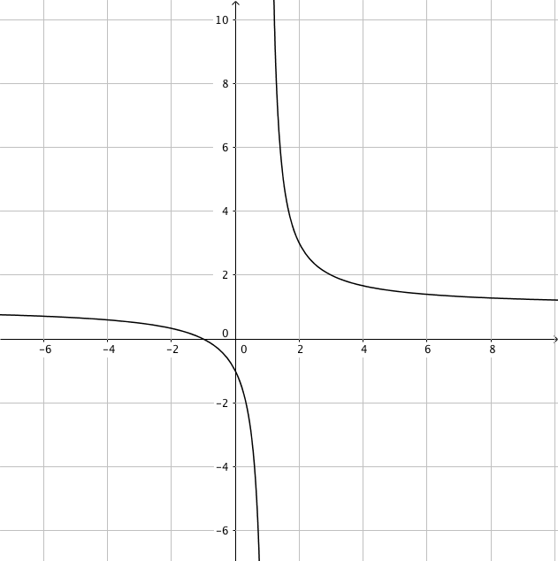
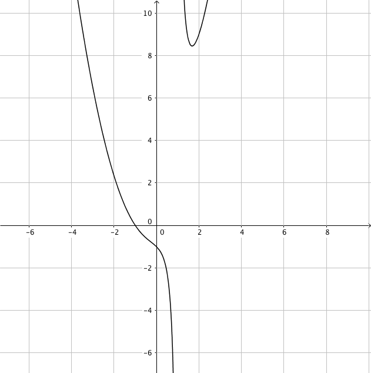
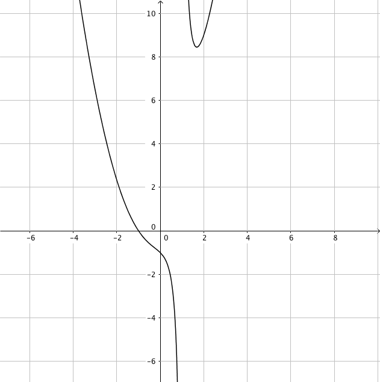
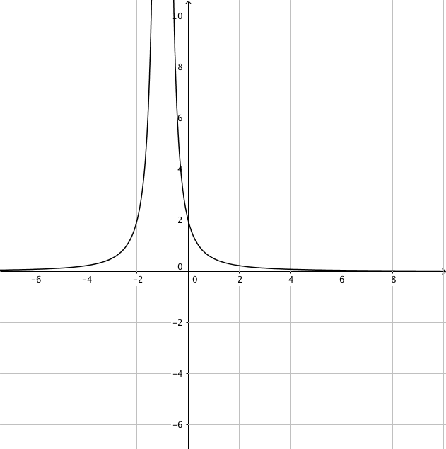
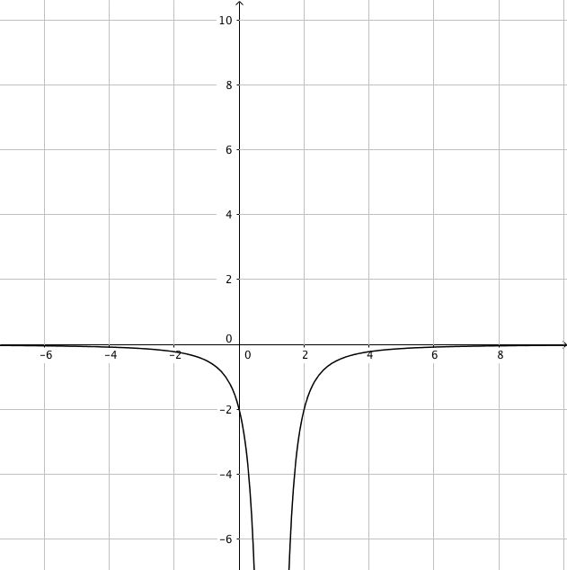
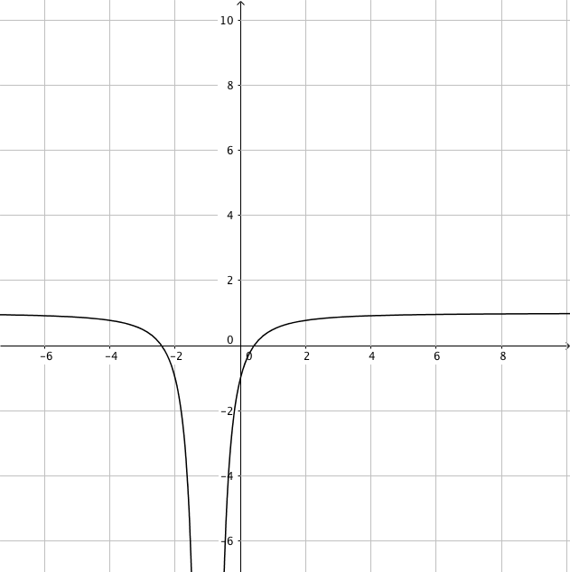
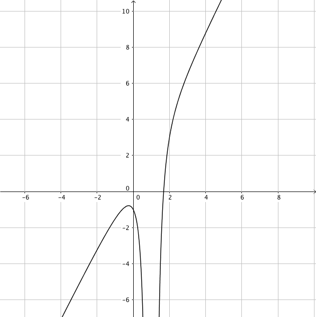
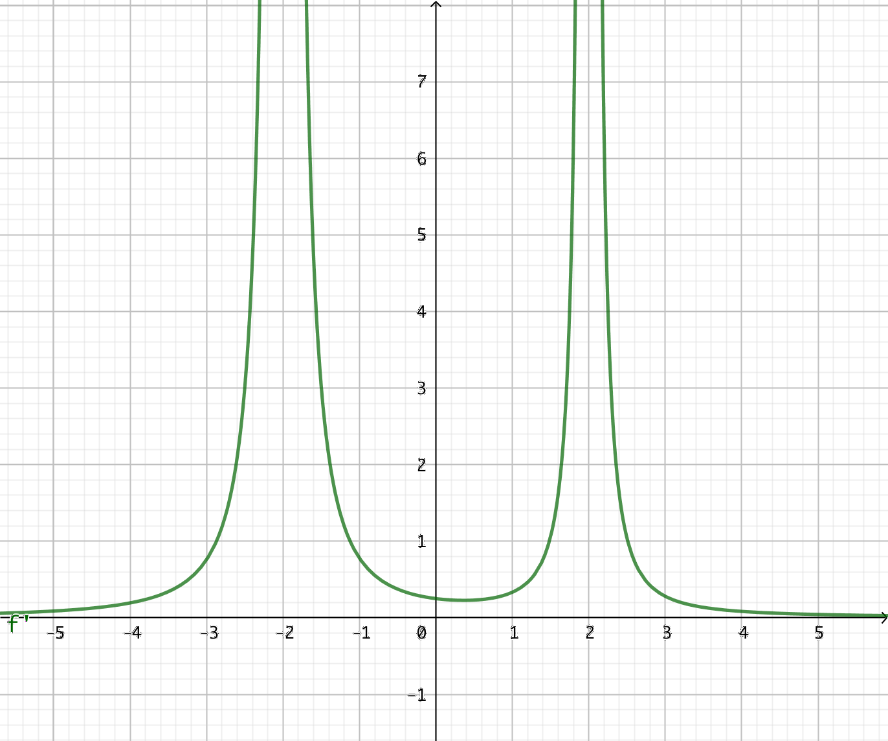

12. Derivatan av kvoten mellan två funktioner
När vi deriverar en kvot av två polynom gör vi som följande: \( D\dfrac{f}{g}= \dfrac{f'g-g'f}{g^2} \). Detta gäller för alla funktioner \( f \) och \( g \) då \( g\not=0 \).
Bevis
Låt \( f(x)=\dfrac{g(x)}{h(x)} \). Då gäller att
\( \begin{array}{rl} g(x) = & f(x)h(x) \\ g'(x) =& f'(x)h(x) +f(x)h'(x) \\ f'(x)h(x) =& g'(x)- f(x)h'(x) \\ f'(x) =& \dfrac{g'(x)- f(x)h'(x)}{h(x)} \\ =& \dfrac{g'(x)- \dfrac{g(x)}{h(x)}h'(x)}{h(x)} \\ =& \dfrac{g'(x)h(x)-g(x)h'(x)}{(h(x))^2} \\ \end{array} \)
Alltså \( \dfrac{g(x)}{h(x)}= \dfrac{g'(x)h(x)-g(x)h'(x)}{(h(x))^2} \).
Exempel 1 Derivera funktionen \( f(x)=\dfrac{2x^2+1}{x-1} \) och bestäm nollställena för derivatan.
Exempel 2 Bestäm \( D\dfrac{1}{x^3} \). Kan vi bestämma derivatan genom att utnyttja \( Df^n=n\cdot f^{n-1}\cdot f' \)?
Exempel 3 Derivera funktionen \( f(x)=\dfrac{3}{(x^2+1)^4} \).
Derivatan av \( D\dfrac{f}{g}= \dfrac{f'g-g'f}{g^2} \).
Detta gäller för alla funktioner \( f \) och \( g \) då \( g\not=0 \).
Uppgifter
- Bestäm
- \( D\dfrac{x^2+1}{x+1} \)
\( D\dfrac{x^2+1}{x+1} = \dfrac{(x+1)2x-(x^2+1)(1)}{(x+1)^2}=\dfrac{x^2+2x-1}{(x+1)^2} \)
- \( D\dfrac{x-1}{-x^2+2} \)
\( D\dfrac{x-1}{-x^2+2}=\dfrac{(-x^2+2)\cdot 1-(x-1)(-2x)}{(-x^2+2)^2} = \dfrac{x^2-2x+2}{(-x^2+2)^2} \)
- \( D \dfrac{x}{x+1} \)
\( D \dfrac{x}{x+1} = \dfrac{1(x+1)-1\cdot x}{(x+1)^2} = \dfrac{1}{(x+1)^2}\)
- \( D\dfrac{x^2+1}{x+1} \)
- Derivera följande funktioner
- \( \dfrac{x^2}{x^2-1} \)
\( D \dfrac{x^2}{x^2-1} = \dfrac{2x(x^2-1)-2x\cdot x^2}{(x^2-1)^2} = \dfrac{-2x}{(x^2-1)^2} \)
- \( \dfrac{3x}{1-x^2} \)
\( D \dfrac{3x}{1-x^2} = \dfrac{3(1-x^2)-(-2x)\cdot 3x}{(1-x^2)^2} = \dfrac{3x^2 + 3}{(1-x^2)^2} \)
- \( \dfrac{x^3}{1-x} \)
\( D\dfrac{x^3}{1-x} = \dfrac{3x^2(1-x)-(-1)\cdot x^3}{(1-x)^2} = \dfrac{-2x^3+3x^2}{(1-x)^2} \)
- \( \dfrac{x^2}{x^2-1} \)
- Derivera funktionen \( \dfrac{1}{3x^2-x} \).
\( D\dfrac{1}{3x^2-x} = D(3x^2-x)^{-1} = -1(3x^2-x)^{-2}(6x-1) = -\dfrac{6x-1}{(3x^2-x)^2} \)
- Derivera funktionen \( \dfrac{5}{x^2-1} \).
\( D\dfrac{5}{x^2-1}=5D(x^2-1)^{-1} = 5(-1)(x^2-1)^{-2}\cdot 2x = \dfrac{-10x}{(x^2-1)^2} \)
- Derivera funktionen \( \dfrac{4}{(x-1)^2} \).
\( D\dfrac{4}{(x-1)^2}=4D(x-1)^{-2}=4(-2)(x-1)^{-3}\cdot 1 = \dfrac{-8}{(x-1)^3} \)
- Kombinera rätt funktion med rätt derivatafunktion. Funktionerna har du till vänster och derivatafunktionerna till höger.
Välj bland följande funktioner:
 

Funktion Derivatafunktion     Funktion Derivatafunktion - Grafen av derivatafunktionen \( f'(x) \) ser du i bilden nedan.

Vad kan du berätta om funktionen \( f \)?
Derivatafunktionen saknar nollställen. Den är endast negativ.
Vid \( x = 2 \) är \( f' \) inte definerad.
Vi vet att funktionen är strängt avtagande. Vid \( x = 2 \) är \( f \) inte definierad.
- Grafen av derivatafunktionen \( f'(x) \) ser du i bilden nedan.

Vad kan du berätta om funktionen \( f \)?
Derivatafunktionen saknar nollställen. Den är endast positiv.
Vid \( x = -2 \) och \( x = 2 \) är \( f' \) inte definerad.
Vi vet att funktionen är strängt växande. Vid \( x = -2 \) och \( x = 2 \) är \( f \) inte definierad.
- Grafen av derivatafunktionen \( f'(x) \) ser du i bilden nedan.

Vad kan du berätta om funktionen \( f \)?
Derivatafunktionen har nollställen vid \( x = 1 \) och \( x = 3 \). \( f' \) byter tecken, från negativ till positiv och positiv till negativ. Alltså byter \( f \) riktning.
Vid \( x = 2 \) är \( f' \) inte definerad.
I intervallet \( 1 < x < 3 \) är \( f' \) positiv, alltså är \( f \) växande. Annars är \( f' \) negativ, alltså är \( f \) avtagande.
Vi vet att funktionen är avtagande, byter riktning vid \( x = 1 \), blir växande. \( f \) är inte definierad vid \( x = 2 \). Sedan är \( f \) växande, byter riktning vid \( x = 3 \) och är sedan avtagande.
- Derivera funktionen \( \dfrac{x^2+1}{2x^2-1} \) och bestäm derivatans nollställe.
\( f'(x)=\dfrac{(2x^2-1)2x-(x^2+1)4x}{(2x^2-1)^2} = \dfrac{4x^3-2x-4x^3-4x}{(2x^2-1)^2} = \dfrac{-6x}{(2x^2-1)^2} \).
Nollställena får vi genom att undersöka då täljaren har värdet 0, alltså \( -6x=0 \). Nollstället är \( x=0 \).
- Derivera funktionen \( f(x)=\dfrac{x^2-2x}{x^2+1} \) och bestäm derivatans nollställen.
\( f'(x)=\dfrac{(x^2+1)(2x-2)-(x^2-2x)\cdot 2x}{(x^2+1)^2} = \dfrac{2x^2+2x-2}{(x^2+1)^2} \)
Nollställena för derivatan får vi får genom att undersöka täljarens nollställen.
Vi får \( 2x^2+2x-2=0 \). Rotformeln ger \( x = \dfrac{-2\pm\sqrt{20}}{4} \) som vi kan förenkla till \( \dfrac{-2\pm2\sqrt{5}}{4} = \dfrac{2(-1\pm\sqrt{5})}{4} \), alltså \( x=\dfrac{-1\pm\sqrt{5}}{2} \).
Nollställena är \( x=\dfrac{-1\pm\sqrt{5}}{2} \).
- Låt \( f(x) = \dfrac{2}{x^2+1} \). Bestäm ekvationen för tangenten då \( x = 1 \).
Derivatafunktionen är \( f'(x)= \dfrac{-4x}{(x^2+1)^2} \).
Riktningskoefficienten är \( f'(1) = -1 \).
\( y \)-koordinaten är \( f(1) = 1 \).
Tangentens ekvation är \( y-y_0 = k(x-x_0) \). Alltså \( y-1 = -1(x-1) \) som är \( y = -x+2 \).
- I vilka punkter byter funktionen \( f(x)=\dfrac{x^2-1}{x+1} \) riktning?
Vi får \( f'(x)=\dfrac{x^2+2x+1}{(x+1)^2}=\dfrac{(x+1)^2}{(x+1)^2} =1 \), OBS! \( x\not=-1 \). Derivatafunktionen har värdet 1, funktionen är konstant växande. Funktionen, \( f \), byter inte riktning.
Eller så förenklar du först \( f \) och deriverar sedan. Du kommer till samma resultat.
- Visa att \( f(x)=\dfrac{2}{4x+1} \) är strängt avtagande i sin definitionsmängd.
\( f \) är definierad alla reella tal förutom \( x=-\dfrac{1}{4} \), nämnarens nollställe.
\( f'(x)=-\dfrac{8}{(4x+1)^2} \). Täljaren har alltid värdet -8 och nämnaren är alltid positiv. Alltså är \( f'(x) \) alltid negativ och funktionen är strängt avtagande i sin definitionsmängd.
- Visa att \( f(x)=\dfrac{x^2+x-2}{x-1} \) är strängt växande i sin definitionsmängd.
\( f \) är definierad alla reella tal förutom \( x=1 \), nämnarens nollställe.
Antingen kan vi förenkla funktionen eller så deriverar vi på.
\( f'(x)=1 \). Eftersom derivatan alltid är positiv har vi en växande funktion.